Final report · Data Science · Prepared with the reproducible pipeline in this repository (python run_pipeline.py)
Recommendation: split the churn KPI into Lapsed (win-back) and At-risk Active (retention). Score members monthly, route each one to its next best action, and prove the uplift with a 20% hold-out control group before scaling.
FreshBasket sends the same retention offers to every member, which wastes money on members who were never going to leave. Management asked four questions: who will churn, which signals come first, whether tier, marketing engagement and support experience matter, and what action would reduce churn.
The pipeline runs in eight steps: data quality → leakage-safe features → rolling-origin validation → four models compared →
calibration and threshold tuning → SHAP drivers and segments → ablation → retention economics. It is a reproducible Python package
(src/) with one entry point (run_pipeline.py), MLflow experiment tracking, unit tests (including an automated leakage test), a
FastAPI scoring endpoint and a PySpark port of the feature pipeline for Databricks.
The workbook has three tables: 2,600 members, 28k member-months, Jan-2023 to Jun-2024. Every sheet carries a title banner, so the
real header is on row 2. Reading with defaults silently yields Unnamed columns. All 28 checks are logged in
outputs/data_quality_log.csv. The issues found:
| Table | Issue | Rows | Handling |
|---|---|---|---|
| profile | Exact duplicate rows | 8 | Dropped |
| profile | CITY: inconsistent casing / whitespace | 104 | Stripped and title-cased (40 raw -> 10 clean values) |
| profile | MEMBERSHIP_TIER: inconsistent casing / whitespace | 104 | Stripped and title-cased (12 raw -> 3 clean values) |
| profile | AGE missing | 78 | Kept as missing; median-imputed at feature time + AGE_MISSING flag |
| profile | GENDER missing | 52 | Filled with explicit 'Unknown' category |
| profile | HOME_STORE_PRICE_TIER missing | 130 | Filled with explicit 'Unknown' category |
| activity | Exact duplicate rows | 58 | Dropped |
| activity | Conflicting duplicates (same customer-month, spend sign flipped) | 4 | Kept the row with positive spend |
| activity | Negative TOTAL_SPEND with transactions > 0 | 22 | Rebuilt as TRANSACTIONS x AVG_BASKET_VALUE |
| activity | Zero TOTAL_SPEND with transactions > 0 | 20 | Rebuilt as TRANSACTIONS x AVG_BASKET_VALUE |
| activity | Outlier TOTAL_SPEND (> 3x transactions x basket) | 13 | Rebuilt as TRANSACTIONS x AVG_BASKET_VALUE (max was $3,731) |
| activity | Remaining high spend after repair (> Q3 + 3 IQR) | 60 | Kept: consistent with transactions x basket, so genuine big shoppers |
| activity | Zero-transaction months (engagement but no purchase) | 2,330 | Kept: valid inactivity signal; spend/basket/promo already 0 |
| activity | Zero-transaction months reporting DISTINCT_CATEGORIES > 0 | 1,452 | Set DISTINCT_CATEGORIES to 0 (cannot buy categories without a transaction) |
| activity | Zero-transaction months reporting COUPONS_REDEEMED > 0 | 653 | Set COUPONS_REDEEMED to 0 (a redemption requires a transaction) |
| activity | Missing months inside a member's active span (769 members) | 953 | Not imputed as zero: treated as missing data; MISSING_MONTHS_6M feature added |
| activity | Profiled members with no activity rows at all | 6 | Cannot be scored; excluded from modelling |
| label | Exact duplicate rows | 5 | Dropped |
| label | LAST_PURCHASE_DATE missing (member never purchased) | 120 | Not churn-eligible by definition; excluded from modelling |
| label | CHURNED disagrees with label re-derived from activity (99.7% agree) | 9 | Official label kept; mismatches trace to missing activity rows |
| label | CHURNED=1 but no pre-April purchase visible in activity | 5 | Excluded (no history to build features from) |
| label | Leaky columns: LAST_PURCHASE_DATE, MONTHS_OBSERVED, INSUFFICIENT_HISTORY_FLAG | 3 | Computed with Apr-Jun 2024 data; never used as features. Rebuilt from pre-cutoff data instead |
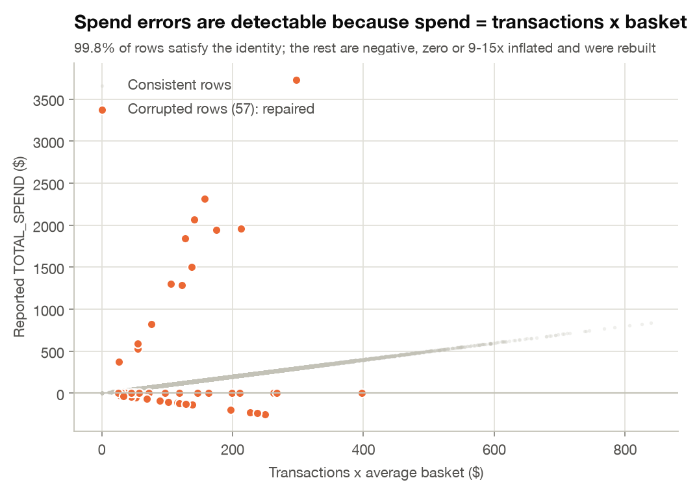
Leakage audit. Three label-table columns, LAST_PURCHASE_DATE, MONTHS_OBSERVED and INSUFFICIENT_HISTORY_FLAG, are
calculated over the full window including Apr-Jun 2024. Churners stop generating rows, so these columns partly encode the answer. They are
never used. Leakage-safe equivalents (recency_months, history_months, short_history) are rebuilt from pre-cut-off data. Section 5 shows
that including the leaky columns would inflate Active-member PR-AUC from 0.80 to 0.87.
Every month roughly 55 members make their final purchase, while new sign-ups keep headline member counts rising. The loss is invisible in the totals.
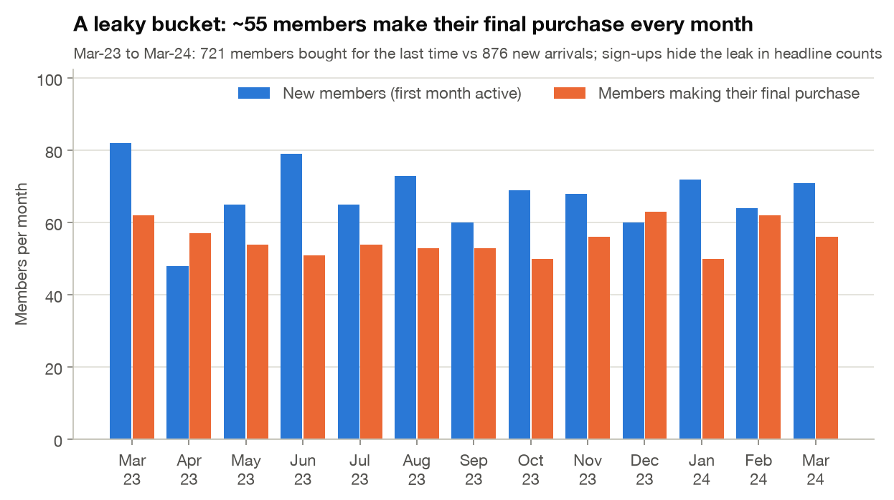
Churn probability is a cliff in recency. Members who last bought 1 month before April churn at 3%; 2 months, 38%; 3 months, 81%; 4+ months, about 100%. The label combines members who left months ago with members who are about to leave.
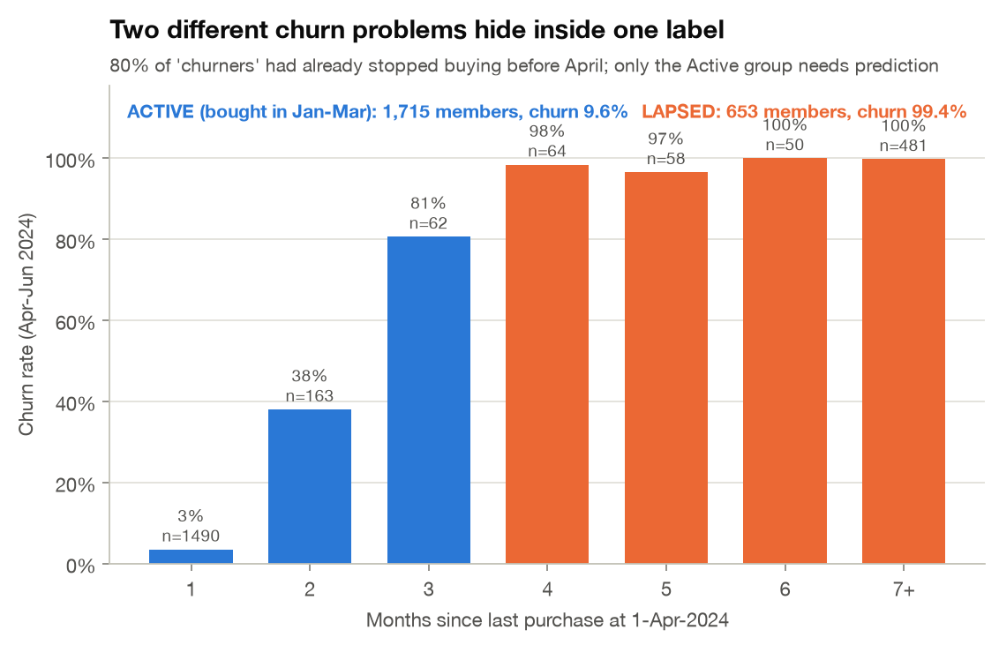
| Segment | Members | Churn rate | Share of churners | What it needs |
|---|---|---|---|---|
| Lapsed (no purchase Jan-Mar 2024) | 653 | 99.4% | 80% | Win-back campaign; a rule identifies them |
| Active (purchased Jan-Mar 2024) | 1,715 | 9.6% | 20% | Early warning model + retention action |
Lining up Active members on their last pre-April purchase shows how churn unfolds. Purchases, app sessions and email opens fade over the final ~2 months while support tickets spike. Those ~2 months are the intervention window.
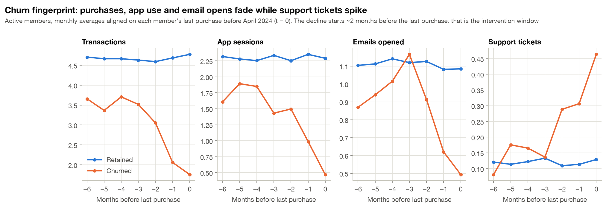
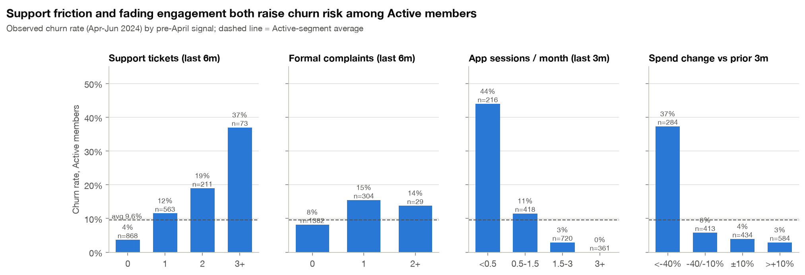
Statistical evidence for Active members: Mann-Whitney U tests, Benjamini-Hochberg corrected. Rank-biserial r > 0 means churners score higher.
| Group | Feature | Mean (churned) | Mean (retained) | Effect size (r) | q (BH) |
|---|---|---|---|---|---|
| Behavioural | txn_l3 | 1.35 | 4.60 | -0.84 | <0.001 |
| Engagement | app_l3 | 0.58 | 2.27 | -0.75 | <0.001 |
| Behavioural | categories_l3 | 1.11 | 2.57 | -0.66 | <0.001 |
| Behavioural | txn_change_pct | -0.41 | 0.11 | -0.63 | <0.001 |
| Behavioural | recency_months | 1.99 | 1.08 | +0.63 | <0.001 |
| Behavioural | spend_change_pct | -0.36 | 0.12 | -0.62 | <0.001 |
| Behavioural | active_months_l3 | 1.77 | 2.66 | -0.59 | <0.001 |
| Engagement | coupons_l3 | 0.18 | 0.59 | -0.55 | <0.001 |
| Engagement | app_change_pct | -0.40 | 0.16 | -0.51 | <0.001 |
| Engagement | email_l3 | 0.43 | 1.09 | -0.49 | <0.001 |
| Support | tickets_6m | 1.49 | 0.63 | +0.43 | <0.001 |
| Support | tickets_l3 | 1.02 | 0.33 | +0.40 | <0.001 |
Validation design (no random split). The churn definition can be replayed at any cut-off, so we built forward-chaining snapshots:
| Role | Cut-off | Label window | Members | Churn | Active churn |
|---|---|---|---|---|---|
| Train | Jul-2023, Oct-2023 | Jul-Sep, Oct-Dec 2023 | 3,767 rows | 21.5% | 10.2% |
| Validation (model choice, calibration, threshold) | Jan-2024 | Jan-Mar 2024 | 2,167 | 30.1% | 10.2% |
| Test (reported once) | Apr-2024 | Apr-Jun 2024, official label | 2,368 | 34.3% | 9.6% |
Models compared: - (a) a recency rule (rule-based baseline: churn rate by months since last purchase); - (b) logistic regression with class weights; - (c) random forest with balanced class weights; - (d) gradient boosting with balanced sample weights.
Hyper-parameters were chosen on validation Active-member PR-AUC, since that is where prediction is hard. Re-weighted scores were then Platt-calibrated on validation, so outputs are real probabilities. The threshold maximises validation Active-member F1.
Results on the untouched Apr-Jun 2024 test quarter:
| Model | Population | Precision | Recall | F1 | PR-AUC (95% CI) | ROC-AUC | Accuracy | Lift @ top 10% |
|---|---|---|---|---|---|---|---|---|
| Recency rule | All eligible | 0.867 | 0.936 | 0.900 | 0.944 (0.93-0.96) | 0.961 | 0.929 | 2.9x |
| Recency rule | Active only | 0.498 | 0.683 | 0.576 | 0.464 (0.39-0.54) | 0.814 | 0.904 | 5.7x |
| Logistic regression | All eligible | 0.930 | 0.952 | 0.941 | 0.986 (0.98-0.99) | 0.991 | 0.959 | 2.9x |
| Logistic regression | Active only | 0.698 | 0.762 | 0.729 | 0.794 (0.73-0.85) | 0.961 | 0.946 | 7.5x |
| Random forest | All eligible | 0.918 | 0.956 | 0.937 | 0.987 (0.98-0.99) | 0.991 | 0.956 | 2.9x |
| Random forest | Active only | 0.663 | 0.780 | 0.717 | 0.775 (0.71-0.83) | 0.955 | 0.941 | 7.4x |
| Gradient boosting | All eligible | 0.934 | 0.953 | 0.943 | 0.989 (0.98-0.99) | 0.992 | 0.961 | 2.9x |
| Gradient boosting | Active only | 0.708 | 0.768 | 0.737 | 0.807 (0.75-0.86) | 0.962 | 0.948 | 7.6x |
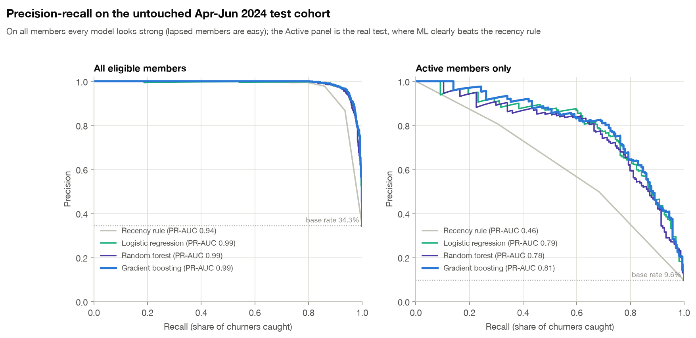
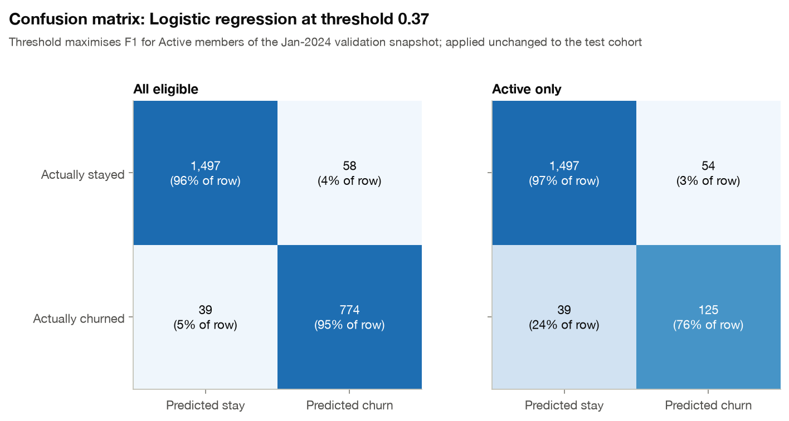
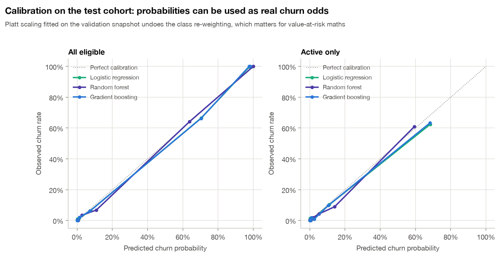
Validation-design checks (5-fold random CV on the test cohort, shown only for comparison):
| Set-up | PR-AUC all | PR-AUC Active |
|---|---|---|
| Out-of-time test (reported), clean features | 0.989 | 0.807 |
| Random 5-fold CV, clean features | 0.987 | 0.800 |
| Random 5-fold CV, + leaky label columns | 0.992 | 0.872 |
Random CV scores close to the out-of-time result on this dataset, so behaviour is stable over time. The leaky label columns, however, would have inflated Active-member PR-AUC by about 0.07.
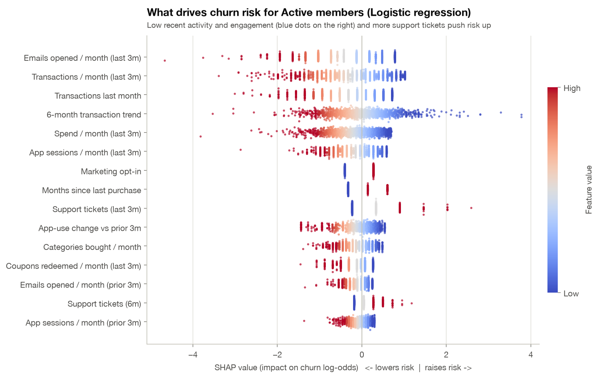
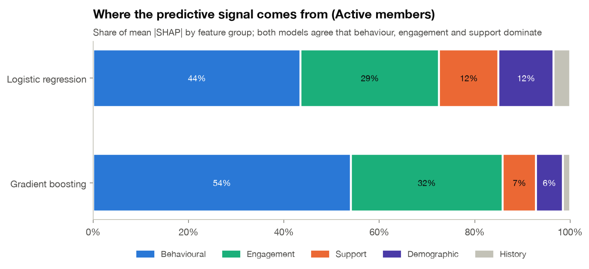
The strongest drivers for Active members are emails opened / month (last 3m), transactions / month (last 3m), transactions last month, 6-month transaction trend, spend / month (last 3m), app sessions / month (last 3m). Behaviour and engagement account for 73% of attribution in the logistic regression and 86% in gradient boosting. Support is the next layer; demographics add little. In the logistic model, marketing opt-in raises risk once email opens are accounted for: members who opted in but stopped opening emails are disengaging. This is a conditional effect, not a reason to avoid opt-ins.
Every member gets three plain-English, risk-increasing drivers in outputs/churn_predictions.csv. Examples from the high-risk Active
list:
| Member | Churn probability | Top 3 drivers (SHAP) |
|---|---|---|
| 502373 | 100% | 4 support tickets in last 3m; Transactions trending down (-1.8/month); 1.0 transactions/month (last 3m) |
| 501335 | 100% | 3 support tickets in last 3m; Transactions trending down (-1.5/month); 0.5 transactions/month (last 3m) |
| 501338 | 99% | 3 support tickets in last 3m; Transactions trending down (-1.3/month); 0.3 transactions/month (last 3m) |
| 500989 | 99% | 4 support tickets in last 3m; 1.0 transactions/month (last 3m); Transactions trending down (-0.9/month) |
| 501056 | 99% | 0.7 transactions/month (last 3m); No marketing emails opened in last 3m; Transactions trending down (-0.9/month) |
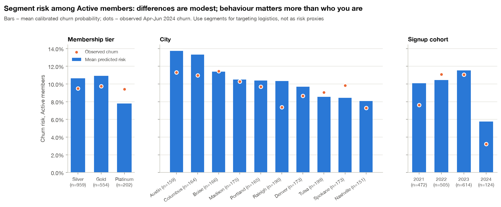
Segments. Among Active members, predicted risk ranges from 8% (Nashville) to 14% (Austin). Austin and Columbus are the highest-risk cities. Platinum members score slightly lower predicted risk, yet observed churn is flat across tiers. Members who joined in 2024 churn least (honeymoon period). Segment differences are much smaller than behavioural ones, so segments should guide logistics (which store team, which channel), not who is targeted.
Each step adds a feature group cumulatively (gradient boosting, test quarter):
| Uplift to detect | Control members | Flagged members needed | Quarters at this volume | Eligible base for 1 quarter |
|---|---|---|---|---|
| 10% | 324 | 1,619 | 9.0 | 21,413 |
| 15% | 146 | 729 | 4.1 | 9,642 |
| 20% | 83 | 415 | 2.3 | 5,478 |
| 25% | 54 | 267 | 1.5 | 3,530 |
| 30% | 38 | 186 | 1.0 | 2,461 |
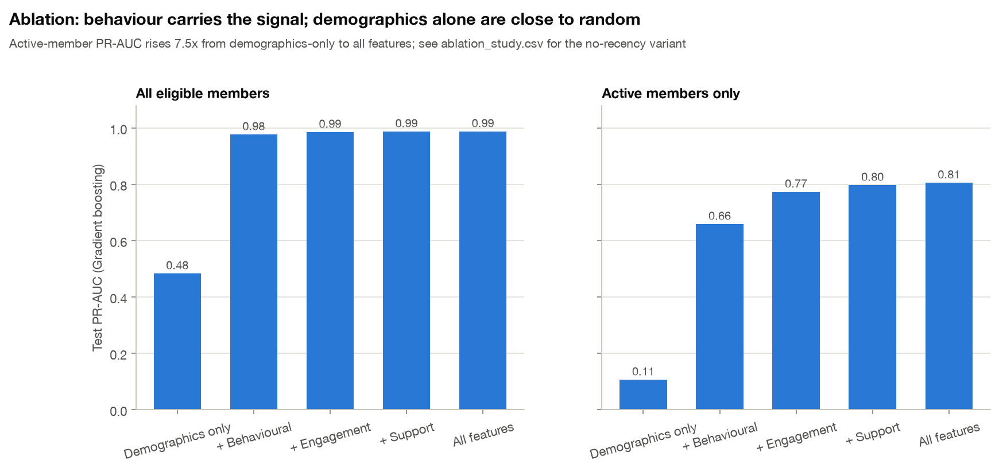
Expected churners prevented = churn probability x relative uplift. Net value = margin retained − cost. All assumptions are listed in Section 10, and the uplifts are deliberately varied in the sensitivity chart.
| Scenario | Members | Churners prevented | Cost | Margin retained | Net value | ROI | Break-even uplift |
|---|---|---|---|---|---|---|---|
| A. Blanket coupon (status quo) | 2368 | 58.7 | $23,680 | $8,257 | −$15,423 | -65% | 21% |
| B. Targeted coupon | 179 | 20.4 | $1,790 | $2,983 | $1,193 | +67% | 9% |
| C1. Support outreach, rule-based | 383 | 22.2 | $5,745 | $3,398 | −$2,347 | -41% | 42% |
| C2. Support outreach, model-targeted | 94 | 18.8 | $1,410 | $2,858 | $1,448 | +103% | 12% |
| D. Win-back for lapsed | 653 | 32.0 | $3,265 | $4,283 | $1,018 | +31% | 4% |
| E. Next-best-action playbook | 549 | 43.0 | $3,860 | $7,419 | $3,559 | +92% | n/a |
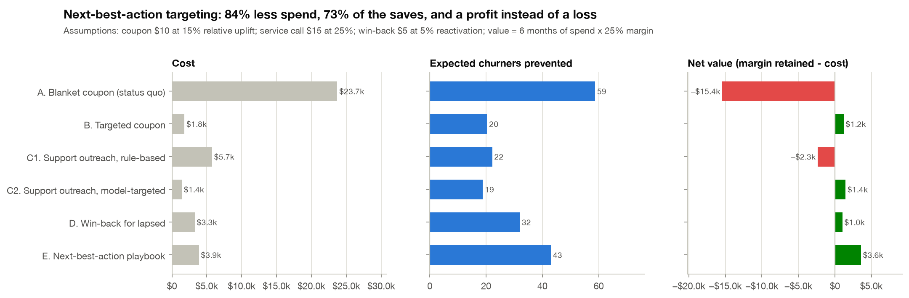
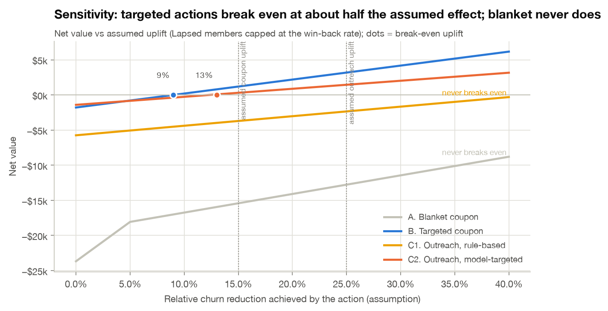
| Recommended action | Members | Expected net value | 6-month revenue at risk |
|---|---|---|---|
| Monitor (no paid action) | 1819 | $0 | $92,889 |
| Personalised coupon | 59 | $562 | $30,709 |
| Proactive service call | 82 | $1,527 | $44,106 |
| Win-back offer | 408 | $1,540 | $280,895 |
The playbook lowers expected churn among Active members from 10.4% to 9.1% next quarter
and recovers about 32 lapsed members, for a net $3,559 on this cohort. The full ranked list, with action, value at risk and
drivers per member, is in outputs/retention_action_list.csv.
A GRU recurrent network (PyTorch) reads each member's raw 6-month activity sequence instead of hand-built trends. Same splits, weighting, calibration and threshold logic. It reaches 0.825 Active PR-AUC (95% CI 0.76-0.87) vs 0.794 for the deployed model, with 80% precision and 78% recall. A paired bootstrap puts the gain at +0.031 (95% CI -0.001 to +0.067; GRU better in 97% of resamples): likely real, but not yet proven. Decision: keep the transparent logistic model live (its per-member SHAP reasons drive the action list), shadow-score the GRU for one quarter, and promote it if the gain holds. This is a standard champion/challenger set-up.
Kaplan-Meier curves of time to final purchase, landmarked at month 3 (groups are defined on each member's first 3 months, which avoids immortal-time bias), with log-rank tests: - Early app use: members using the app less than once a month early on are still buying at 12 months only 46% of the time, vs 70% (p < 0.001). App onboarding is a lifetime-value lever. - No difference: early complaints (p = 0.28) and tier (p = 0.56). Support friction predicts churn when it is recent (section 4), not early in the relationship.
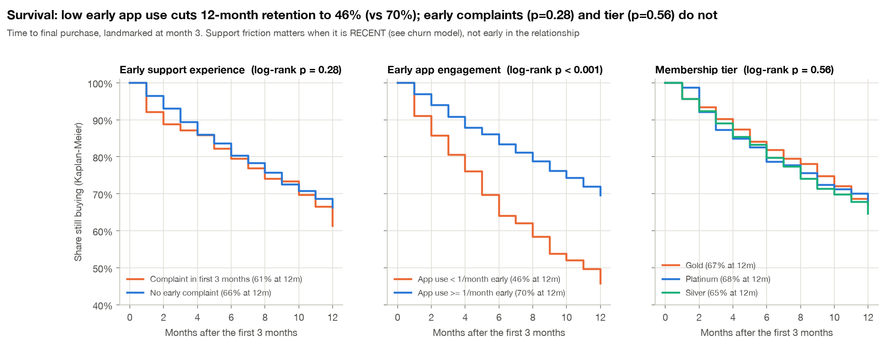
K-means on Active members' recent behaviour gives five messaging personas. Separation is modest (silhouette 0.12), so personas tailor the message while the churn score decides who gets it.
| Persona | Members | Observed churn | Mean predicted | Recommended play |
|---|---|---|---|---|
| Fading & frustrated | 215 | 60% | 62% | Service-recovery call first, then a preferred-category win-back coupon |
| Ramping up | 81 | 9% | 10% | Reinforce the new habit: app onboarding and a 'next visit' reward |
| Light & low-touch | 430 | 3% | 6% | Cross-category offers to deepen the basket; low-cost digital nudges |
| Engaged but service-heavy | 551 | 3% | 2% | Fix friction fast (ticket follow-up); no discount needed while they still shop |
| Loyal core | 438 | 0% | 0% | No discounts; recognition and referral rewards |
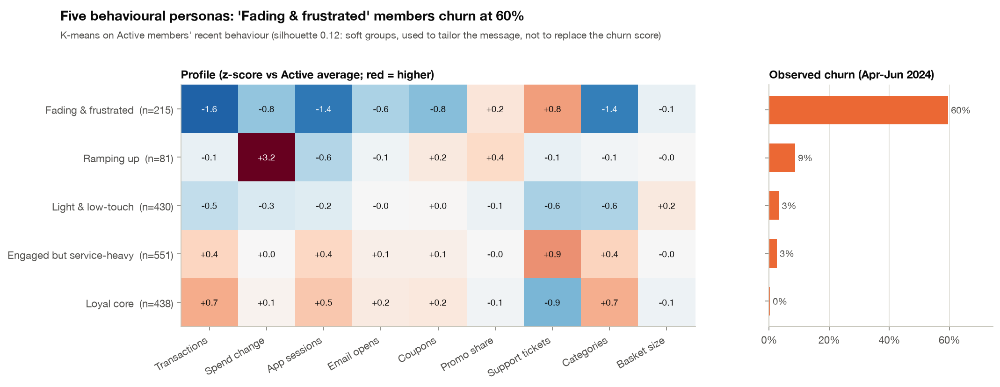
Choosing the cut-off by money instead of F1 gives t = 0.45 ($1,229) vs t = 0.37 for F1. The profit curve is flat across a wide band, so the targeting decision is robust to the exact threshold.
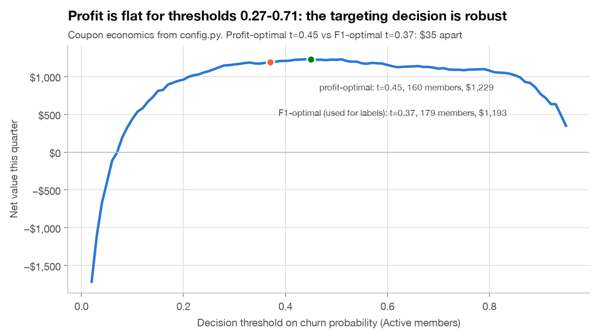
The uplift assumptions should be measured, not argued about. Hold out 20% of flagged members as a control group and use a two-sided two-proportion test (α = 0.05, power 80%), baseline churn 76% among flagged members:
| Uplift to detect | Control members | Flagged members needed | Quarters at this volume | Eligible base for 1 quarter |
|---|---|---|---|---|
| 10% | 324 | 1,619 | 9.0 | 21,413 |
| 15% | 146 | 729 | 4.1 | 9,642 |
| 20% | 83 | 415 | 2.3 | 5,478 |
| 25% | 54 | 267 | 1.5 | 3,530 |
| 30% | 38 | 186 | 1.0 | 2,461 |
Detecting the assumed 15% uplift needs about 729 flagged members (146 in control). At this sample's volume (2,368 eligible members) that takes about 4 quarters. A programme with roughly 9,642+ eligible members could read the result within a single quarter.
The model is used as it would be in production: a snapshot at Jul-2024 built from Jan-Jun 2024 behaviour, with no label yet.
| Segment | Members | Expected churners (90% interval) | Flagged high-risk | 6-month revenue at risk |
|---|---|---|---|---|
| Active | 1,657 | 149 (137-161) | 144 | $90,919 |
| Lapsed | 817 | 800 | 817 | $445,324 |
The ranked list with drivers and next best action is in outputs/next_quarter_watchlist.csv, and in the dashboard.
tenure_months, which drifts by design
as the program ages). 12 features sit in the 0.1-0.25 watch band, supporting quarterly retraining.MODEL_CARD.md.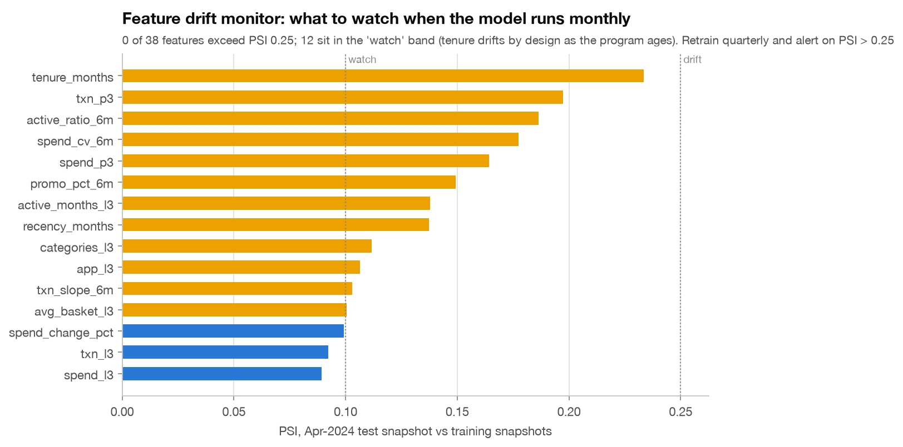
python app.py opens an interactive console with four tabs:
- Overview: headline KPIs.
- Members: filter today's action list or next quarter's watchlist, then click any member to see their churn probability,
SHAP reasons, persona, next best action and 18-month activity.
- Scenario simulator: nine live assumption sliders, running the same scenario engine as this report.
- Insights: survival, profit curve, drift, fairness and A/B sizing.
Dash is natively supported on Databricks Apps, so the console can be deployed next to the model.
The pipeline already says who is at risk, why (SHAP) and what to do (next best action). An LLM now drafts what to say: an app push, an email, or a call script for the support agent.
Grounding and privacy. The prompt contains only the member's three SHAP drivers, persona, preferred category, tier, action and offer budget. No name, ID, age or city is sent.
Guardrails. Every draft is checked automatically, retried once with the violations fed back, and otherwise replaced by a deterministic template. A draft fails if it: - mentions churn, models, prediction or tracking; - offers more than the budget, or uses percentage offers; - contains an invented promo code, gift card or voucher; - apologises for a support issue the member never raised; - is too long.
The first live run showed why this matters: unguarded drafts invented a promo code (WELCOME5), offered a gift card, and
apologised to a member with no tickets. Each failure became a rule and a test.
60 priority members (balanced across coupon, service call and win-back) received a drafted message: 60 by the LLM (Groq, openai/gpt-oss-20b), 0 by the template engine. Guardrails passed for 100%.
Proactive service call (Agent call script), drivers: Transactions trending down (-1.9/month); No marketing emails opened in last 3m; No transactions last month
Checking in on your recent support request: Hi, I’m calling from FreshBasket to thank you for reaching out about your recent issue and to see if everything has been resolved to your satisfaction. We’ve added a $10.00 credit to your loyalty account, which you can use on any dairy products you love. Is there anything else I can help you with today? Thank you for being a valued Gold member.Personalised coupon (App push + email), drivers: Transactions trending down (-1.5/month); 0.7 transactions/month (last 3m); No marketing emails opened in last 3m
Enjoy a Fresh Beverage Treat: We’ve added a $10 beverage coupon to your loyalty account—just for you. Use it on any drink in the Beverages aisle during your next visit. Let us know if you need anything else. Thank you for being a valued Gold member.Win-back offer (Email), drivers: No purchase for 5 months; No marketing emails opened in last 3m; Spend $0/month (last 3m)
We’ve added a special offer to your account: Hello,
We’ve added a $5 credit to your loyalty account for your favorite frozen foods. It’s ready for you to use on your next visit.
We’d love to hear how we can make your shopping experience better. Let us know what you’re looking for or if there’s anything we can help with.
Thank you for being a valued member of FreshBasket.
The expected result is about 84% lower spend, with a profit instead of a loss.
3. Make service recovery a retention lever. Members with 2+ tickets churn at 19-37%. Close the loop on tickets within the 2-month
fingerprint window, with priority for members the model flags.
4. Automate free nudges before paid offers. A 40%+ spend drop or app use below 0.5 sessions/month should trigger app push and
personalised content first.
5. Revisit tier benefits. Platinum perks are not buying loyalty. Test engagement-based rewards (app streaks, category missions) instead of
spend-only tiers.
6. Measure, don't assume. Hold out 20% of flagged members as a control group, which needs about 729 flagged members to
detect a 15% uplift (section 9.5). Measure the true uplift of each action and feed it back into config.py.
7. Operationalise on the existing stack. Run a monthly Databricks job (Data Factory ingest → Delta → spark_features.py → MLflow
champion model → CRM queue). Put the Retention Console on Databricks Apps. Monitor PR-AUC, calibration and PSI drift
each month, and shadow-score the GRU challenger.
python run_pipeline.py regenerates every output, chart, the executed notebook, this report and the slide deck (about 1 minute).requirements.txt, and MLflow tracking for every model run (outputs/mlflow_runs_summary.csv).python -m pytest: unit tests, including an automated leakage test that corrupts all post-cut-off data and asserts the features
do not change.src/spark_features.py is a PySpark port of the feature builder. Verified: identical outputs for 8,302 member-snapshots across 4 cut-offs (31 feature columns, zero mismatches).
notebooks/02_databricks_churn_job.py shows the scheduled job on Azure Data Factory, Delta tables and the MLflow registry.uvicorn src.api:app serves /score for real-time scoring, for example from the CRM.python app.py (Dash). CI: GitHub Actions rebuilds the outputs and runs the tests on every push.
Governance: MODEL_CARD.md covers intended use, metrics, fairness and monitoring.